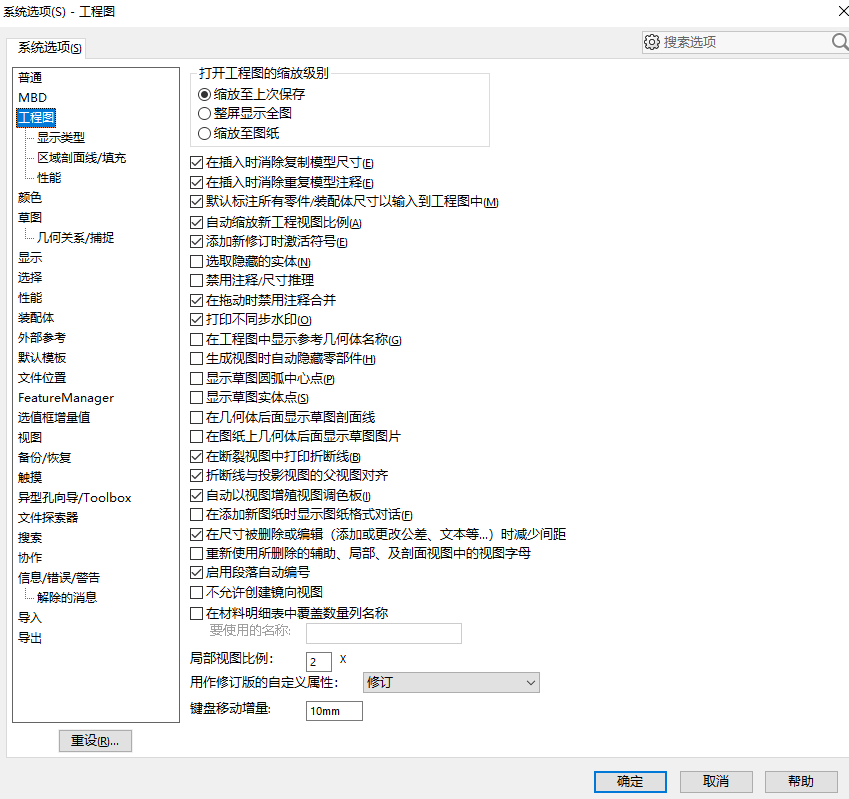
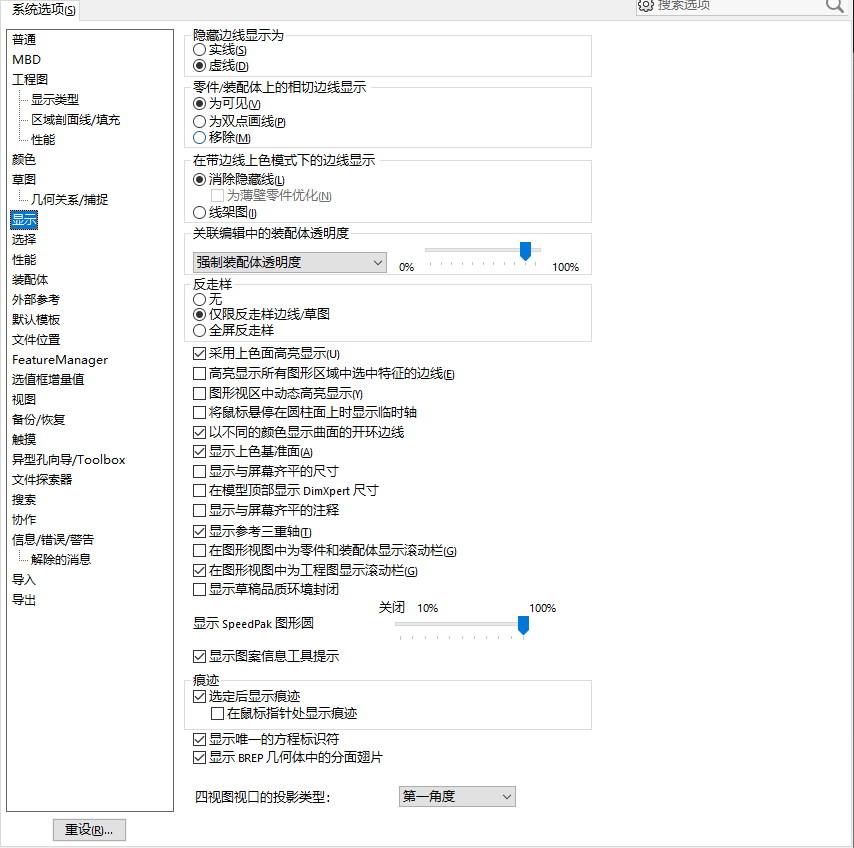
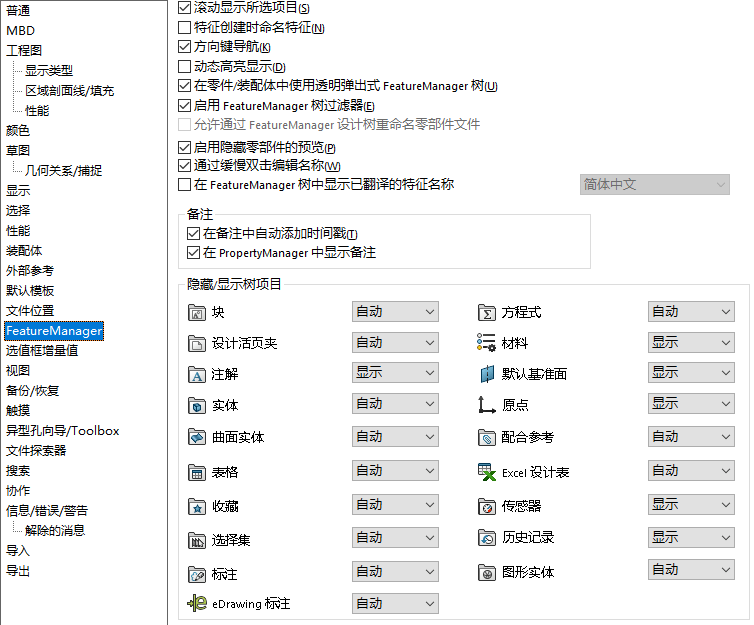
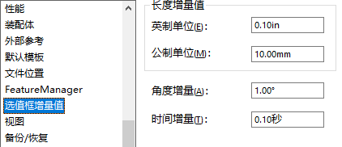
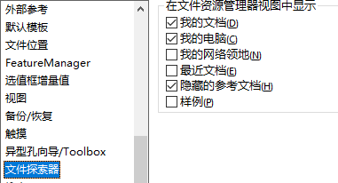

系统选项
普通
输入尺寸值
恢复文件关联
如果将系统设置为使用特定版本的 SOLIDWORKS 从文件资源管理器打开所有 SOLIDWORKS 文件，则单击此选项以恢复文件关联。
要使用此选项，您必须使用以管理员身份运行权限启动 SOLIDWORKS。 这些步骤因操作系统而异。 对于相关信息，请参阅 Microsoft 知识库。
显示确认图标
工程图
剖面线
性能
颜色
草图
标注无进编辑问题
标注尺寸时，发现标注完无法输入尺寸值，需要额外双击才能进入编辑。你可以勾选【系统选项-普通-输入尺寸值】
自动标注问题
勾选【系统选项-草图-在生成实体时启用荧屏上数字输入】，那么在绘制草图的同时输入尺寸值，仅在输入值的情况下创建尺寸（该选项会顺便生成尺寸标注）

下面是设置前后，在绘制草图时的编辑页。其中“选项”中就会多一项“添加尺寸”的可选项。
在你绘制草图实体的同时，输入尺寸数值。则这个尺寸也会自动添加。

草图端点显示问题
显示
显示参考三重轴
选定后显示痕迹
选择
性能

细节层次：
增强图形性能
（需要重启SOLIDWORKS）
目前发现会影响文本注解的显示，造成模糊情况。
标注尺寸时，发现标注完无法输入尺寸值，需要额外双击才能进入编辑。
注意：
*对于 SOLIDWORKS 2020 和更高版本，如果您的专业显卡无法识别 RealView 和 Enhanced Graphics Performance，请安装此 修补 程序。
受支持的显卡已更新 发行说明
*对于 SOLIDWORKS 2018 用户，请安装此项 修补 以启用最新显卡的性能增强功能。
*对于 SOLIDWORKS 2019 用户，请安装此项 修补 以启用最新显卡的性能增强功能。
对应的已存档 发行说明
装配体
外部参考
默认模板
文件位置
搜索路径不能设置问题：
SOLIDWORKS® 搜索路径由 Windows®“控制面板”中的“索引选项”项目控制, 转到“控制面板”>“索引选项”>“修改”，并禁用或选中您不希望出现在搜索路径中的任何位置的复选框。
FeatureManage
使用3DE UES模块后，此处的装配体特征树重命名将被禁用。
选值框增量值
视图
正视视图保持屏幕图像大小不变（不会缩放到全局全屏显示）
备份/恢复
触摸
异形孔向导/Toolbox
文件探索器
搜索

协作

信息/错误/警告
解除的信息
这里将收集一些在软件使用中经常遇到的一些弹窗提示问题，并对其做下解释说明。对于一些”不再提示”的弹窗。你可以勾选弹窗底部的勾选框，默认不再提示。恢复提示

导入
3D interconnect

直径测量显示异常